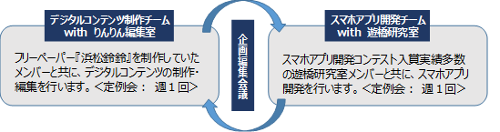
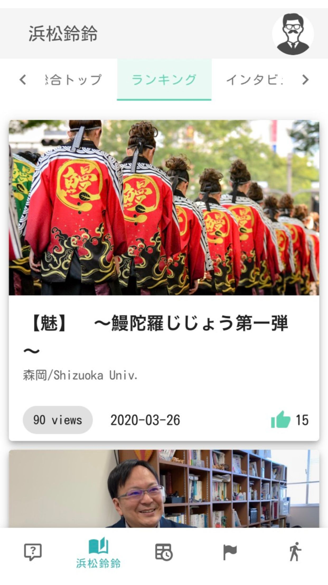
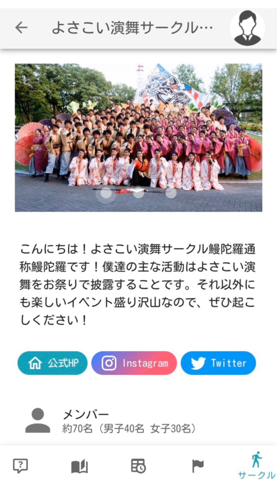
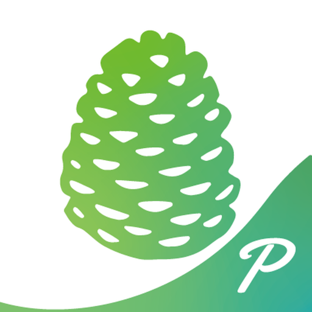

研究テーマ
GAFAに代表されるプラットフォーマーが世界を席巻している。 本研究では、プラットフォームサービスの実習環境を構築する と共に、実践的取り組みの中でチキンエッグ問題（コンテンツ 制作・システム開発・ユーザ獲得） の解消方法を模索する。

大学キャンパスサービスのプラットフォームモデル
取組内容
アプリ開発 とコンテンツ制作の2チームに 分けてタスクを推進し、隔週の編集企 画会議で方針決定や情報共有を図っ ている。2019年度・前期は、Q&Aの機能など を搭載すると共に、フリーペーパー『浜松鈴々』の協力をWebマガジンを制作した。後期は、常葉大学・聖隷クリスト ファー大学向けスマホアプリをリリースし、3校でコンテンツを共有して運用を行っている。

先端活動の流れ
プロジェクト成果



静岡大学・浜キャン 「パンプラージュ」最新版 を2020年4月にリリース